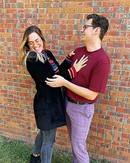
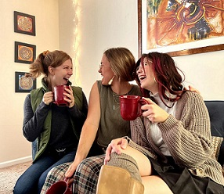
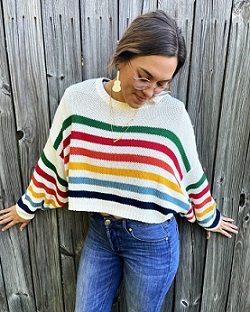

What religious or social benefits do social media accounts provide religious women?
Is social media a space for these women to have a sense of religious authority?
Social Media Experiment
I wanted to know exactly how hard it was to create just three photos that
were close to the quality of the photos I saw on my social media. After the
help from three friends, $100 on new clothes, 2 hours of hair and makeup,
one hour of taking photos, and three hours of editing I was able to produce three photos.
Not surprisingly, this experiment was not easy. Through this process, I have gained a new
respect for the women on the pages I see every day. It is a big commitment to post every day
on social media and even bigger commitment to create crafted uniform content. This lead
me to ask, why do some LDS women spend so much time crafting their online persona, and is it part
of their personal religious expression?



A *fake* story of Martha-Anne:
Martha-Anne was always a sweet, faithful, LDS woman. She attended church,
she was baptized at the appropriate age, and she was excited to attend BYU
to hopefully meet a good LDS man after his mission trip. Her path seemed to be aligning
with her dreams when she met John (pic 1). They quickly got engaged and Martha-Anne and John
seemed like the perfect couple, but there was trouble in paradise. Staying private to the world,
Martha-Anne posts a photo with her girlfriends (pic 2), she is happy with them, but her caption indicates
she is having a hard time. Finally, Instagram was shocked by her last post. Martha-Anne, still faithful
in her religion, has decided to open up about her sexuality (pic 3). After months of discussion, Martha-Anne
and John have realized that they are both part of the LGBTQ community. Though they will not get married,
both ex-lovers are committed to helping each other through these new waters. #loveislove
Resources
Susanna Morrill, “Women’s Popular Literature as Theological Discourse” in
The Religious History of American Women
This chapter examined how women claimed and expressed Theological arguments
for female inclusion in the LDS church. By examining Mormon women poetry in the late 1800s
early 1900s, Morrill presents a unique look into the lives and religious perspectives of Victorian
age Mormon women.
This article analyzes a study done on feminism in the LDS church. It looks at social media
and how women in the study, as practicing LDS members, identify in relation to feminism and feminist ideas.
Nancy Ross and Jessica Finnigan,
“Mormon Feminist Perspectives on the Mormon Digital Awakening:
A Study of Identity and Personal Narratives,” in
Dialogue: A Journal of Mormon Thought
Conclusion
Women of all religions have found religious authority in uncommon or "unofficial"
spaces throughout time. To understand the religious history of America means to understand
the religious history of women, and often that means looking at uncommon places. Will future
research look to LDS social media in the hopes of gaining a well-rounded view of their religious
history or will research still be inclined to analyze "official" sources of religion?
If you are interested in this topic, listen to this podcast, created by Jacob Barrett
and I, where we dive deeper into the topic of "uncommon" sights for religiosity.